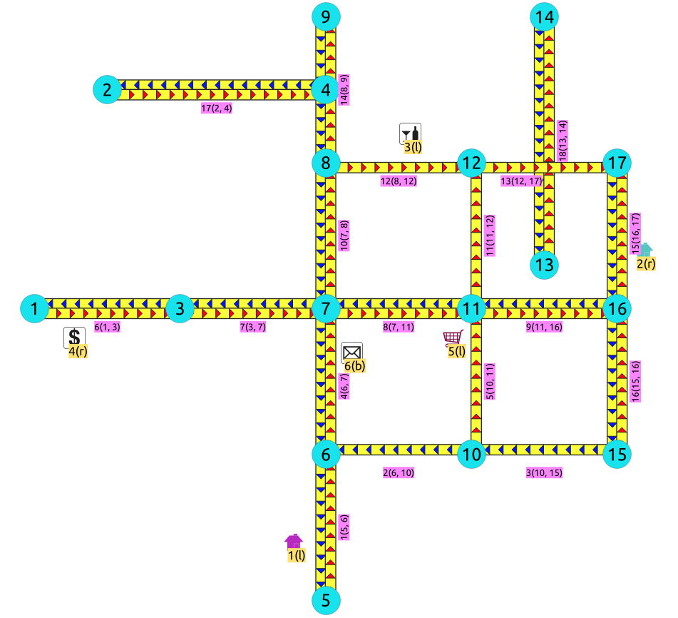

pgr_degree¶
pgr_degree - För varje toppunkt i en odelad graf, returnera antalet kanter som är kopplade till toppunktet.
Föreslagen
Varning
Föreslagna funktioner för nästa version av Mayor.
De finns inte officiellt med i den aktuella versionen.
Koden har granskats och är därför inte experimentell.
Namn, signatur och funktionalitet kanske inte ändras.
pgTap-tester har gjorts. Men det kan behövas fler.
Dokumentationen kan behöva förbättras.
Tillgänglighet
Version 3.8.0
Justering av felmeddelanden.
Ny signatur med endast Edges SQL.
Funktion befordrad till tjänsteman.
Version 3.4.0
Ny föreslagen funktion.
Beskrivning¶
Beräknar graden för topparna i en odelad graf
Graden (eller valensen) för ett toppunkt i en graf är antalet kanter som är angränsande till toppunktet.
Fungerar för undirected grafer.
En loop bidrar med 2 till en topps grad.
Ett toppunkt med grad 0 kallas ett isolerat toppunkt.
Isolerad toppunkt är inte en del av resultatet
Vertex som inte deltar i undergrafen betraktas som en isolerad vertex.
Det kan finnas en
dryrunexekvering och koden som används för att få svaret kommer att visas i en PostgreSQLNOTICE.Koden kan användas som baskod för de specifika applikationskraven.
Ingen beställning utförs.
Underskrifter¶
dryrun])(node, degree)Kanter¶
dryrun])(node, degree)- exempel:
Hämta graden för de toppar som definieras i tabellen edges
SELECT * FROM pgr_degree($$SELECT id, source, target FROM edges$$)
ORDER BY node;
node | degree
------+--------
1 | 1
2 | 1
3 | 2
4 | 1
5 | 1
6 | 3
7 | 4
8 | 3
9 | 1
10 | 3
11 | 4
12 | 3
13 | 1
14 | 1
15 | 2
16 | 3
17 | 2
(17 rows)
Kanter och toppar¶
(node, degree)- Exempel:
Extrahera information om toppunkt
pgr_degree kan använda pgr_extractVertices inbäddad i anropet.
För nätverk av anständig storlek är det bäst att förbereda vertex-tabellen i förväg och använda den vid anrop av pgr_degree. (Se Användning av en vertex-tabell)
Beräkna nodernas grad:
SELECT * FROM pgr_degree(
$$SELECT id FROM edges$$,
$$SELECT id, in_edges, out_edges
FROM pgr_extractVertices('SELECT id, geom FROM edges')$$);
node | degree
------+--------
1 | 1
2 | 1
3 | 2
4 | 1
5 | 1
6 | 3
7 | 4
8 | 3
9 | 1
10 | 3
11 | 4
12 | 3
13 | 1
14 | 1
15 | 2
16 | 3
17 | 2
(17 rows)
Parametrar¶
Parameter |
Typ |
Beskrivning |
|---|---|---|
|
Kanter SQL enligt beskrivningen nedan |
|
|
Vertex SQL enligt beskrivningen nedan |
Valfria parametrar¶
Parameter |
Typ |
Standard |
Beskrivning |
|---|---|---|---|
|
|
|
|
Inre frågor¶
Kanter SQL¶
För signaturen Edges and Vertices:
Kolumn |
Typ |
Beskrivning |
|---|---|---|
|
|
Identifierare av kanten. |
För signaturen Edges:
Kolumn |
Typ |
Beskrivning |
|---|---|---|
|
|
Identifierare av kanten. |
|
|
Identifierare för den första slutpunktsvertexen på kanten. |
|
|
Identifierare för den andra slutpunktsvertexen på kanten. |
Vertex SQL¶
För signaturen Edges and Vertices:
Kolumn |
Typ |
Beskrivning |
|---|---|---|
|
|
Identifierare för den första slutpunktsvertexen på kanten. |
|
|
Array med identifierare för de kanter som har toppunkten
|
|
|
Array med identifierare för de kanter som har toppunkten
|
Resultat kolumner¶
Kolumn |
Typ |
Beskrivning |
|---|---|---|
|
|
Identifierare för toppunkt |
|
|
Antal kanter som är angränsande till toppunkten |
Ytterligare exempel¶
Grad av en slinga¶
En loop bidrar med 2 till en topps grad.
![graph G {
2 [shape=circle;style=filled;color=green;fontsize=8;width=0.3;fixedsize=true];
2 -- 2 [label="1",fontsize=8];
}](_images/graphviz-4b5edcb4927407e2e96684359670cbc6d50b1f7f.png)
Använda signaturen Edges.
SELECT * from pgr_degree('SELECT 1 as id, 2 as source, 2 as target');
node | degree
------+--------
2 | 2
(1 row)
Använda signaturen Edges and Vertices.
SELECT * FROM pgr_degree(
$$SELECT 1 AS id$$,
$$SELECT id, in_edges, out_edges
FROM pgr_extractVertices('SELECT 1 as id, 2 as source, 2 as target')$$);
node | degree
------+--------
2 | 2
(1 row)
Grad av en undergraf¶
För följande är en delgraf av Exempeldata:
\(E = \{(1, 5 \leftrightarrow 6), (1, 6 \leftrightarrow 10)\}\)
\(V = \{1,2,3,4,5,6,7,8,9,10,11,12,13,14,15,16,17\}\)
![graph G {
5,6,10 [shape=circle;style=filled;color=lightgreen;fontsize=8;width=0.3;fixedsize=true];
1,2,3,4,7,8,9,11,12,13,14,15,16,17 [shape=circle;style=filled;color=cyan;fontsize=8;width=0.3;fixedsize=true];
5 -- 6 [label="1",fontsize=8];
10 -- 6 [label="2",fontsize=8];
1 [pos="0,2!"];
2 [pos="0.5,3.5!"];
3 [pos="1,2!"];
4 [pos="2,3.5!"];
5 [pos="2,0!"];
6 [pos="2,1!"];
7 [pos="2,2!"];
8 [pos="2,3!"];
9 [pos="2,4!"];
10 [pos="3,1!"];
11 [pos="3,2!"];
12 [pos="3,3!"];
13 [pos="3.5,2.3!"];
14 [pos="3.5,4!"];
15 [pos="4,1!"];
16 [pos="4,2!"];
17 [pos="4,3!"];
}](_images/graphviz-098b0175f70f696e3bb21b5ac6f3bb1dd47cc8bd.png)
De hörn som inte deltar i kanten betraktas som isolerade
deras grad är 0 i undergrafen och
deras examen visas inte i utdata.
Använda signaturen Edges.
SELECT * FROM pgr_degree($$SELECT * FROM edges WHERE id IN (1, 2)$$);
node | degree
------+--------
10 | 1
6 | 2
5 | 1
(3 rows)
Använda signaturen Edges and Vertices.
SELECT * FROM pgr_degree(
$$SELECT * FROM edges WHERE id IN (1, 2)$$,
$$SELECT id, in_edges, out_edges FROM vertices$$);
node | degree
------+--------
5 | 1
6 | 2
10 | 1
(3 rows)
Använda en toppunktstabell¶
För nätverk av anständig storlek är det bäst att förbereda vertices-tabellen i förväg och använda den vid anrop av pgr_degree.
Extrahera toppunktsinformationen och spara i en tabell:
CREATE TABLE vertices AS
SELECT id, in_edges, out_edges
FROM pgr_extractVertices('SELECT id, geom FROM edges');
SELECT 17
Beräkna nodernas grad:
SELECT * FROM pgr_degree(
$$SELECT id FROM edges$$,
$$SELECT id, in_edges, out_edges FROM vertices$$);
node | degree
------+--------
1 | 1
2 | 1
3 | 2
4 | 1
5 | 1
6 | 3
7 | 4
8 | 3
9 | 1
10 | 3
11 | 4
12 | 3
13 | 1
14 | 1
15 | 2
16 | 3
17 | 2
(17 rows)
Utförande av provkörning¶
Använd dryrun => true för att få den fråga som genereras för att få fram toppunktsinformationen.
Resultaten kan användas som baskod för att göra en förfining baserad på behoven för backend-utvecklingen.
SELECT * FROM pgr_degree(
$$SELECT id FROM edges WHERE id < 17$$,
$$SELECT id, in_edges, out_edges FROM vertices$$,
dryrun => true);
NOTICE:
WITH
-- a sub set of edges of the graph goes here
g_edges AS (
SELECT id FROM edges WHERE id < 17
),
-- sub set of vertices of the graph goes here
all_vertices AS (
SELECT id, in_edges, out_edges FROM vertices
),
g_vertices AS (
SELECT id,
unnest(
coalesce(in_edges::BIGINT[], '{}'::BIGINT[])
||
coalesce(out_edges::BIGINT[], '{}'::BIGINT[])) AS eid
FROM all_vertices
),
totals AS (
SELECT v.id, count(*)
FROM g_vertices v
JOIN g_edges e ON (v.eid = e.id) GROUP BY v.id
)
SELECT id::BIGINT, count::BIGINT FROM all_vertices JOIN totals USING (id)
;
node | degree
------+--------
(0 rows)
Att hitta återvändsgränder¶
Om det redan finns en toppunktstabell som byggts med hjälp av pgr_extractVertices och man vill ha graden för hela grafen i stället för en delmängd, kan man avstå från att använda pgr_degree och arbeta med kolumnerna in_edges och out_edges direkt.
Graden av en återvändsgränd är 1.
För att få bort återvändsgränderna:
SELECT id FROM vertices
WHERE array_length(in_edges || out_edges, 1) = 1;
id
----
1
2
5
(3 rows)
En återvändsgränd uppstår när
Toppunkten är gränsen för en återvändsgränd, en väg med genomfartsförbud eller en väg med utfartsförbud.
Toppunkten ligger på gränsen för den importerade grafen.
Om en större graf importeras är det inte säkert att toppunkten är en återvändsgränd
Noden \(4\), är en återvändsgränd i frågan, även om den visuellt ser ut som en slutpunkt för 3 kanter.
{kind=link}
Är noden \(4\) en återvändsgränd eller inte?
![graph G {
1,2,4,5,9,13,14 [shape=circle;style=filled;color=lightgreen;fontsize=8;width=0.3;fixedsize=true];
3,6,7,8,10,11,12,15,16,17 [shape=circle;style=filled;color=cyan;fontsize=8;width=0.3;fixedsize=true];
5 -- 6 [label="1",fontsize=8]; 6 -- 10 [label="2",fontsize=8];
10 -- 15 [label="3",fontsize=8]; 6 -- 7 [label="4",fontsize=8];
10 -- 11 [label="5",fontsize=8]; 1 -- 3 [label="6",fontsize=8];
3 -- 7 [label="7",fontsize=8]; 7 -- 11 [label="8",fontsize=8];
11 -- 16 [label="9",fontsize=8]; 7 -- 8 [label="10",fontsize=8];
11 -- 12 [label="11",fontsize=8]; 8 -- 12 [label="12",fontsize=8];
12 -- 17 [label="13",fontsize=8]; 8 -- 9 [label="",fontsize=8];
16 -- 17 [label="15",fontsize=8]; 15 -- 16 [label="16",fontsize=8];
2 -- 4 [label="17",fontsize=8]; 13 -- 14 [label="18",fontsize=8];
1 [pos="0,2!"]; 2 [pos="0.5,3.5!"];
3 [pos="1,2!"]; 4 [pos="2,3.5!"];
5 [pos="2,0!"]; 6 [pos="2,1!"];
7 [pos="2,2!"]; 8 [pos="2,3!"];
9 [pos="2,4!"]; 10 [pos="3,1!"];
11 [pos="3,2!"]; 12 [pos="3,3!"];
13 [pos="3.5,2.3!"]; 14 [pos="3.5,4!"];
15 [pos="4,1!"]; 16 [pos="4,2!"];
17 [pos="4,3!"];
}](_images/graphviz-0077274f44a10a0ed134a2562bc344093b31f804.png)
Svaret på den frågan beror på vilken applikation det gäller.
Finns det en sådan liten trottoarkant:
Som inte tillåter ett fordon att använda den visuella korsningen?
Är applikationen för fotgängare och därför kan fotgängaren enkelt gå på den lilla trottoaren?
Gäller applikationen el och elledningar som enkelt kan förlängas ovanpå den lilla trottoarkanten?
Finns det en stor klippa och från örnens utsikt ser det ut som att återvändsgränden ligger nära segmentet?
Beroende på svaret kan det bli nödvändigt att ändra uppgifterna.
När det finns många återvändsgränder kan funktionerna Sammandragning - Familj av funktioner användas för att dra ihop grafen för att påskynda bearbetningen.
Hitta linjära hörn¶
Graden för ett linjärt toppunkt är 2.
Om det redan finns en toppunktstabell som byggts upp med hjälp av pgr_extractVertices
För att få de linjära kanterna:
SELECT id FROM vertices
WHERE array_length(in_edges || out_edges, 1) = 2;
id
----
3
9
13
15
16
(5 rows)
![graph G {
3,15,17 [shape=circle;style=filled;color=lightgreen;fontsize=8;width=0.3;fixedsize=true];
1,2,4,5,6,7,8,9,10,11,12,13,14,16 [shape=circle;style=filled;color=cyan;fontsize=8;width=0.3;fixedsize=true];
5 -- 6 [label="1",fontsize=8]; 6 -- 10 [label="2",fontsize=8];
10 -- 15 [label="3",fontsize=8]; 6 -- 7 [label="4",fontsize=8];
10 -- 11 [label="5",fontsize=8]; 1 -- 3 [label="6",fontsize=8];
3 -- 7 [label="7",fontsize=8]; 7 -- 11 [label="8",fontsize=8];
11 -- 16 [label="9",fontsize=8]; 7 -- 8 [label="10",fontsize=8];
11 -- 12 [label="11",fontsize=8]; 8 -- 12 [label="12",fontsize=8];
12 -- 17 [label="13",fontsize=8]; 8 -- 9 [label="",fontsize=8];
16 -- 17 [label="15",fontsize=8]; 15 -- 16 [label="16",fontsize=8];
2 -- 4 [label="17",fontsize=8]; 13 -- 14 [label="18",fontsize=8];
1 [pos="0,2!"]; 2 [pos="0.5,3.5!"];
3 [pos="1,2!"]; 4 [pos="2,3.5!"];
5 [pos="2,0!"]; 6 [pos="2,1!"];
7 [pos="2,2!"]; 8 [pos="2,3!"];
9 [pos="2,4!"]; 10 [pos="3,1!"];
11 [pos="3,2!"]; 12 [pos="3,3!"];
13 [pos="3.5,2.3!"]; 14 [pos="3.5,4!"];
15 [pos="4,1!"]; 16 [pos="4,2!"];
17 [pos="4,3!"];
}](_images/graphviz-938f4f075262bd73818662374bced10b51df6375.png)
Dessa linjära hörn är korrekta, till exempel när de hörnen är farthinder, stoppsignaler och applikationen tar hänsyn till dem.
När det finns många linjära toppar, som inte behöver beaktas, för att påskynda bearbetningen, kan funktionerna Sammandragning - Familj av funktioner användas för att kontrahera problemet.
Se även¶
Index och tabeller